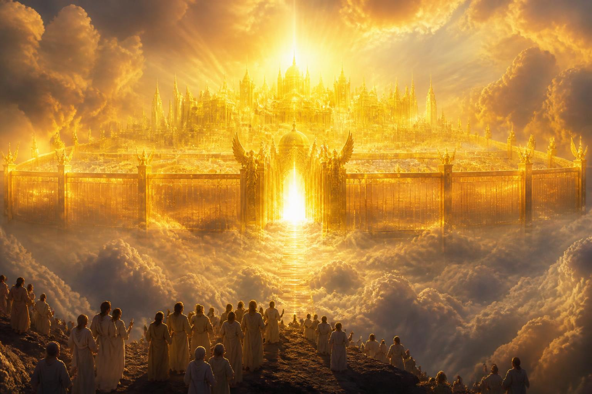
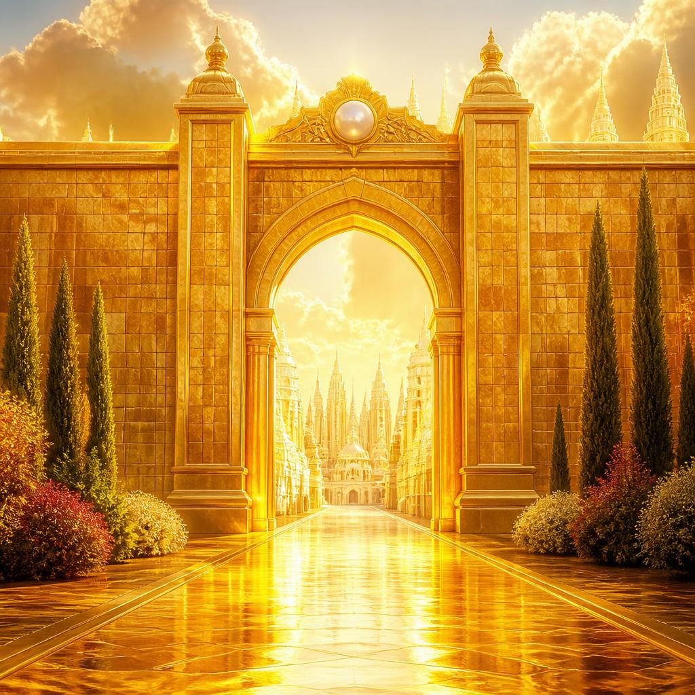
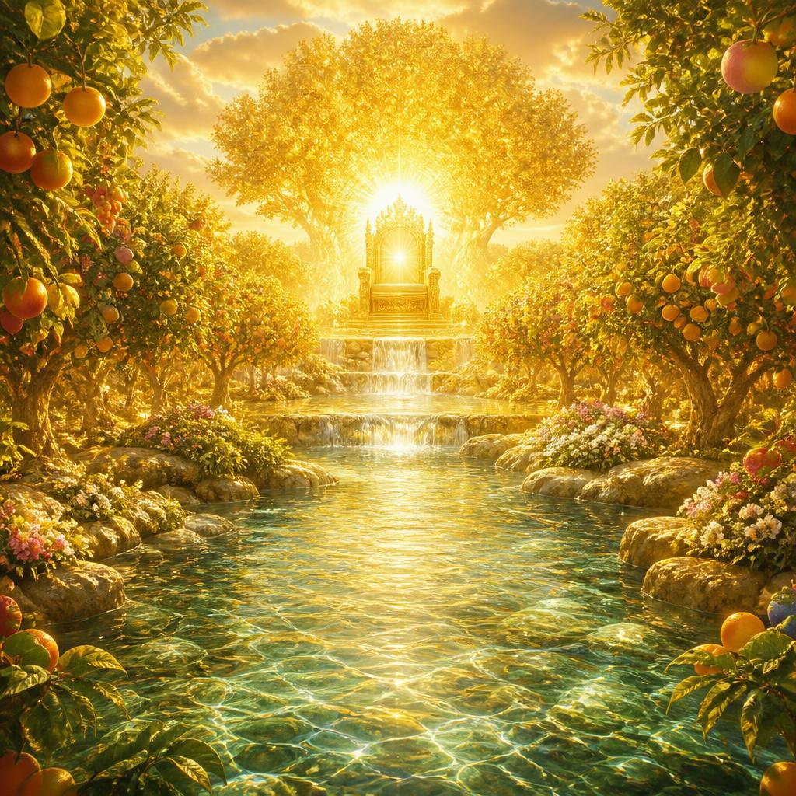
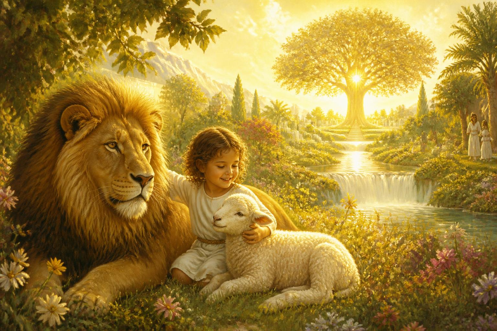

“Nós, porém, segundo a Sua promessa, esperamos novos céus e nova terra, nos quais habita
justiça.”
— 2 Pedro 3:13
A esperança dos filhos de Deus não é escapar para sempre da Terra, mas vê-la restaurada. Deus não abandona o planeta que criou: Ele o purifica pelo fogo e o refaz em perfeição eterna.
Para os adventistas do sétimo dia, essa é a bem-aventurada esperança (Tito 2:13). Depois da segunda vinda de Jesus, dos mil anos no céu e do juízo final, o pecado é erradicado do universo e Deus cria “novos céus e nova terra”. Ali a justiça não será apenas praticada — ela habitará, como moradora permanente.
Jesus resumiu tudo em uma bem-aventurança curta e revolucionária: os mansos — os que não tomam nada à força — herdarão exatamente aquilo que os violentos tentaram conquistar: a Terra.

Isaías já anunciava a nova criação séculos antes (Is 65:17; 66:22). A esperança adventista é a mesma dos profetas hebreus.
O plano da salvação devolve ao ser humano o domínio perdido no Éden (Gn 1:28; Dn 7:27). A criação inteira é resgatada (Rm 8:21).
Mateus 5:5 e Salmo 37:11,29 apontam para o mesmo lugar: os justos herdarão a Terra e nela habitarão para sempre.
João a viu descer “de Deus, do céu, preparada como noiva ataviada para o seu esposo”. A capital do universo deixa de ser distante: Deus muda de endereço e vem morar com Sua gente.
Segundo a compreensão adventista da profecia, a cidade é preparada por Cristo (João 14:1-3), abriga os remidos durante o milênio no céu e desce à Terra purificada no fim dos mil anos (Ap 20:9; 21:2). Ali ocorre o juízo final, e sobre a Terra renovada a cidade permanece para sempre.
Doze alicerces com pedras preciosas — jaspe, safira, esmeralda, ametista — e os nomes dos doze apóstolos.
Cada porta é uma única pérola, com os nomes das doze tribos de Israel. Jamais se fecham, pois ali não há noite.
Um quadrado perfeito de 12 mil estádios (cerca de 2.200 km de perímetro), muro de 144 côvados.
Não há templo: o Senhor Deus Todo-Poderoso e o Cordeiro são o seu santuário e a sua luz (Ap 21:22-23).

Do trono de Deus e do Cordeiro sai o rio da água da vida, claro como cristal. No meio da praça e de ambos os lados do rio está a árvore da vida, que produz doze frutos, um a cada mês, e cujas folhas servem para a cura das nações.
“Bem-aventurados os mansos,
porque herdarão a terra.”
Dica para decorar: divida o versículo em três batidas — bem-aventurados os mansos / porque / herdarão a terra. Repita em voz alta cinco vezes ao acordar e cinco antes de dormir por três dias, e recite para o instrutor sem consultar.
A Bíblia é clara: não é uma questão de mérito humano, mas de relacionamento com Jesus. Os salvos são os que aceitaram a graça de Cristo e permitiram que Ele transformasse a vida deles.
Não pela perfeição própria, mas pela justiça de Cristo recebida por fé (Ef 2:8-9), que produz uma vida de obediência amorosa (Jo 14:15). A entrada é gratuita — mas ninguém é levado à força.
Os justos ressuscitados na primeira ressurreição, na volta de Jesus, e os fiéis vivos transformados num abrir e fechar de olhos (1 Ts 4:16-17; 1 Co 15:51-53) — com corpos imortais e incorruptíveis.
A Bíblia não fala de pessoas condenadas por acaso, mas de escolhas persistentes e não arrependidas. Deus respeita a decisão de quem, até o fim, recusa Sua graça. A lista abaixo não existe para assustar: existe para mostrar o que Jesus quer curar em nós hoje.
| Referência | O que é mencionado |
|---|---|
| Apocalipse 21:8 | Covardes, incrédulos, abomináveis, assassinos, impuros, feiticeiros, idólatras e todos os mentirosos. |
| Apocalipse 22:15 | Os cães, os feiticeiros, os impuros, os homicidas, os idólatras e todo o que ama e pratica a mentira. |
| 1 Coríntios 6:9-10 | Os que praticam impureza sexual, idólatras, adúlteros, ladrões, avarentos, bêbados, maldizentes e roubadores. |
| Gálatas 5:19-21 | As obras da carne: inimizades, ciúmes, iras, discórdias, invejas, bebedices e coisas semelhantes. |
Boa notícia: logo depois da lista mais dura, Paulo escreve: “Tais fostes alguns de vós; mas vós vos lavastes, mas fostes santificados, mas fostes justificados em o nome do Senhor Jesus Cristo” (1 Co 6:11). Ninguém precisa continuar sendo o que era.
A doutrina adventista ensina que os perdidos não sofrem eternamente: eles são destruídos pelo fogo do juízo final, que é eterno em seus resultados (Ml 4:1-3; Ap 20:9,14). O próprio Satanás e o pecado deixam de existir. Por isso “a angústia não se levantará por duas vezes” (Naum 1:9) — o universo estará para sempre seguro e limpo.
Eternidade não é um culto infinito nem nuvens e harpas. É vida real, ativa e feliz, num mundo perfeito, com o Criador acessível e visível.
“Edificarão casas e nelas habitarão; plantarão vinhas e comerão o seu fruto” (Is 65:21). Haverá trabalho criativo, sem exploração nem cansaço.
“O lobo e o cordeiro pastarão juntos, o leão comerá palha como o boi” (Is 65:25). Nada mais fere nem destrói no santo monte.
Toda criatura no céu, na terra e no mar louva o Cordeiro (Ap 5:13). “O reino do mundo se tornou de nosso Senhor” (Ap 11:15).
“De sábado em sábado, virá toda a carne a adorar perante Mim” (Is 66:23) — o sábado permanece como sinal eterno da criação e da redenção.
Estudar a criação, viajar a outros mundos, conversar com os profetas e com os anjos — e, acima de tudo, conhecer melhor a Cristo a cada dia.
Famílias reunidas, amizades restauradas, ninguém mais se despede. E o encontro maior: ver Jesus face a face e tocar as marcas dos cravos.
“Na Tua presença há plenitude de alegria; à Tua direita, delícias perpetuamente.” — Salmo 16:11

O último item é o mais bonito: falar com um amigo sobre a Nova Terra. Não precisa ser um sermão. Use o roteiro abaixo como apoio e depois registre no seu cartão como foi a conversa.
No contexto de João, exilado numa ilha, o mar era símbolo de separação, caos e povos em conflito (Ap 17:15). A imagem promete o fim de toda separação — não necessariamente a ausência de água.
O ouro terrestre é opaco; o da cidade é descrito como translúcido. É a linguagem humana esticada ao máximo para descrever algo que “nem olhos viram, nem ouvidos ouviram” (1 Co 2:9).
A única lembrança do pecado em toda a eternidade serão as cicatrizes nas mãos de Jesus — o preço do resgate, guardado para sempre como troféu do amor.
Os salvos ressuscitam com corpos glorificados, imortais e incorruptíveis (1 Co 15:42-44; Fp 3:21) — comerão do fruto da árvore da vida e beberão da água da vida.
A medida do muro (Ap 21:17) é “medida de homem, isto é, de anjo”: números simbólicos de plenitude (12 × 12), indicando um povo completo, de Israel e das nações.
Em O Grande Conflito, ela escreve que “todos os tesouros do universo estarão abertos ao estudo dos remidos de Deus” — a eternidade será uma escola de alegria sem fim.
| Tema | Resposta em uma frase | Texto-chave |
|---|---|---|
| A grande esperança | Novos céus e nova terra onde habita a justiça, herdados pelos mansos. | 2 Pe 3:13; Mt 5:5; Ap 21:1 |
| A cidade santa | A Nova Jerusalém desce do céu e Deus passa a habitar com os homens. | Ap 21:2-3 |
| Habitantes | Os vencedores, servos de Deus, que O adoram e veem Sua face. | Ap 22:3-4; 21:7 |
| Quem não estará | Os que persistem no pecado sem arrependimento — mas há perdão hoje. | Ap 21:8; 22:15; 1 Co 6:9-10; Gl 5:19-21 |
| Eternidade com Jesus | Sem morte, luto ou dor; adoração, alegria e comunhão sem fim. | Ap 5:13; 11:15; 21:4 |
| Memorização | “Bem-aventurados os mansos, porque herdarão a terra.” | Mt 5:5 |
| Compartilhar | Contar a um amigo como será a vida na Terra restaurada. | Sl 16:11; Is 65:17-25 |